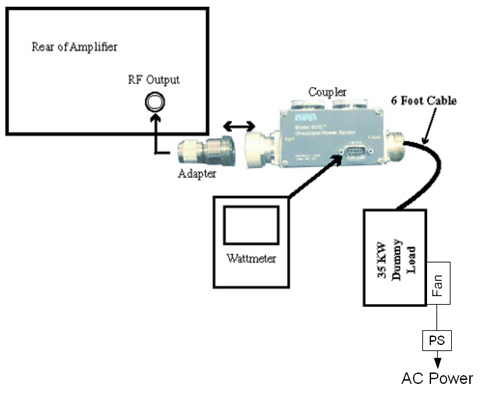
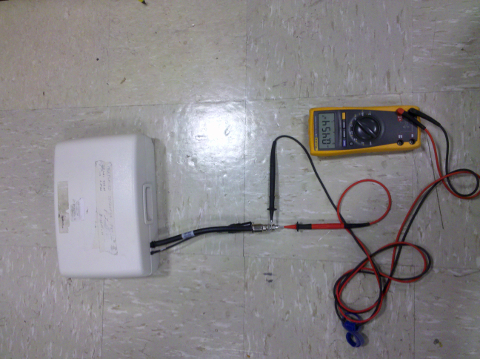

- 00000018WIA306E3E20GYZ
- id_131064625.2
- Jul 11, 2022 3:30:49 PM
Troubleshooting Multi-Nuclear Spectroscopy (MNS)
| Personnel requirements | |||
|---|---|---|---|
| Required persons | Preliminary requirements | Procedure | Finalization |
| 1 | - | - | - |
| Tools and test equipment | |||
|---|---|---|---|
| Item | Quantity | Part number | Manufacturer |
| RF Power Measurement Kit (Bird wattmeter) | 1 |
5307511-2, 5307511-3, 5307511-4, or 5307511-5 | - |
This document contains possible error messages and faults due to the multi-nuclear spectroscopy (MNS) radio frequency (RF) receive and transmit chains.
Interconnect diagrams for MNS subsystem are available under the System Diagrams folder, Interactive Block Diagrams, then by choosing the RF > MNS Option view.
Remove the multi-nuclear spectroscopy transmit/receive (MNS T/R) module from the system when the spectroscopy scanning is complete. The presence of the module may cause image quality degradation.
Troubleshooting the receive chain
- Verify that the proper center frequency is being used for either
carbon or phosphorous nucleus. Check the switch and determine what
type of switch it is.
Table 1. 3.0T MNS frequency range Nucleus Minimum frequency Maximum frequency 13C 32.016 32.227 31P 51.574 51.941 - Confirm that you can perform a TPS reset without MNS receive
errors.
- If so, check the connection between J4 and the LPCA. If the
connection is working properly, connect the narrow band coil to the
A-port connector and perform a test scan. If the connection is not
working properly, fix the connection.
- Note:If the test scan passes, inspect the MNS quick disconnect box for damage. Confirm with the customer that the coil is in working order or run the MNS Functional Check procedure.
- If the functional check fails, the MNS T/R switch has failed or the quick disconnect box is faulty.
- If the functional check passes, but there is no signal, ensure that the 8W8 cable assembly from the LPCA is plugged into J4 of the MNS upconverter.
- If the test scan fails or the system cannot scan, inspect the A-port connector, ODU egress connector for damage. Also check that the RF amplifier is producing the proper RF output power.
- If the TPS reset fails, check these connections at the MNS upconverter
and confirm that each is in working order:
- Upconverter J5 to reroute box (RRB) J8
- Upconverter J2 to RF control board J11
- Upconverter J1 to SPW J33
- SPW J33 to MNS exciter J2
- SPW J31 to MNS exciter J1
If the connections are working properly, check the operation of the MNS upconverter. If the connections are faulty, fix the connection that needs repair.
- If so, check the connection between J4 and the LPCA. If the
connection is working properly, connect the narrow band coil to the
A-port connector and perform a test scan. If the connection is not
working properly, fix the connection.
- At the PEN wall, check all the cabling coming from the PHPS2. In particular, check the quality of the contacts and shielding.
- Check the in-line filters (if any) and toroids (if any).
- Check that the magnet pressure transducer is properly shielded.
- Confirm that the SRI firmware is at the latest revision. Check the SRI cabling for good contact and shielding.
Troubleshooting the transmit chain
- Measure the amplifier output source by connecting the RF output to the RF power meter.
For details, see 8kW 3.0T MNS Amplifier Calibration.
Figure 1. MNS output test setup using Bird 3.0T RF power measurement kit 
- If there is a TR bias issue, check the MNS T/R switch. Use a multimeter in the diode drop mode (open in one direction, 0.4 V in the other direction) to ensure that the MNS T/R switch is working properly.
Figure 2. MNS T/R switch diode check 
Ensure that the T/R bias path is complete from the bias driver module in the PEN cabinet to the T/R switch on the LPCA cover.
Locate the switch arrangement on the SPW and ensure that the switches are properly connected.
Figure 3. SPW transmit switch locations 
- Ensure that the amplitude of the RF transmit pulse at the input of the RF amplifier by disconnecting the cable at the RF IN port on the amplifier and connecting it to the 50 ohm DC input of an oscilloscope, with a DC block.
- Run a test scan. The amplitude of the square pulse should be >0.2 V peak-to-peak at a TG setting of 200.
- Attach the dummy load to the RF output.
- If the problem is corrected, check the transmit chain connection and other components (T/R switch, coil).
- Check connections to RF amplifier. .
- Systematically swap the circuit boards inside the ASC chassis, noting whether the error follows one particular board.
- Swap the connections from the amplifier to the boards in the ASC to see if this indicates a problem coming from the amplifier.
- If there is an issue coming from one particular component (UPM RF detector boards, UPM processor boards, RF amplifier, 50 ohm terminators), investigate the issue to ensure that component is working properly with the system.
- The 50 ohm terminators may not be connected. Check that the 50 ohm loads (BNC male snap-on) are applied to J1, J2, J3, and J6 on UPM RF detector boards 19U and 19L. Ensure UPM cables are connected to J4 and J5 on UPM RF detector boards 19U and 19L.
- If the connections are okay, ensure the UPM RF detector boards and 50 ohm terminators are working properly.
Finalization
Perform Doing a check scan to ensure the system is functioning correctly.